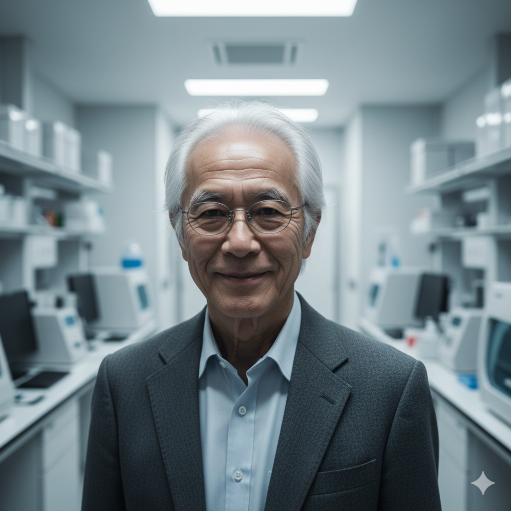

（記録抹消済）';">
センター長 不和 臨界（ふわ りんかい）
不和睡眠総合技術センターの公式ウェブサイトへようこそ。 当センターは、1970年代より続く「意識と睡眠の関係」に関する研究を発端とし、現在では国内屈指の脳波解析・環境制御技術を有する研究機関へと成長いたしました。
私たちが追求しているのは、単なる休息としての睡眠ではありません。 それは、肉体の束縛を離れ、意識がより安らげる時間プロセスとしての睡眠です。 最新の低周波数制御技術は、人類がかつて到達し得なかった精神の静寂を可能にします。
金枝聖域第八病院をはじめとする各提携機関と共に、私たちはこれからも「不変の意識」の解明に全力を尽くします。 当センターの技術が、皆様の新たな目覚めの助けとなることを願っております。
探求に終わりはなく、諦めずに邁進してまいります。